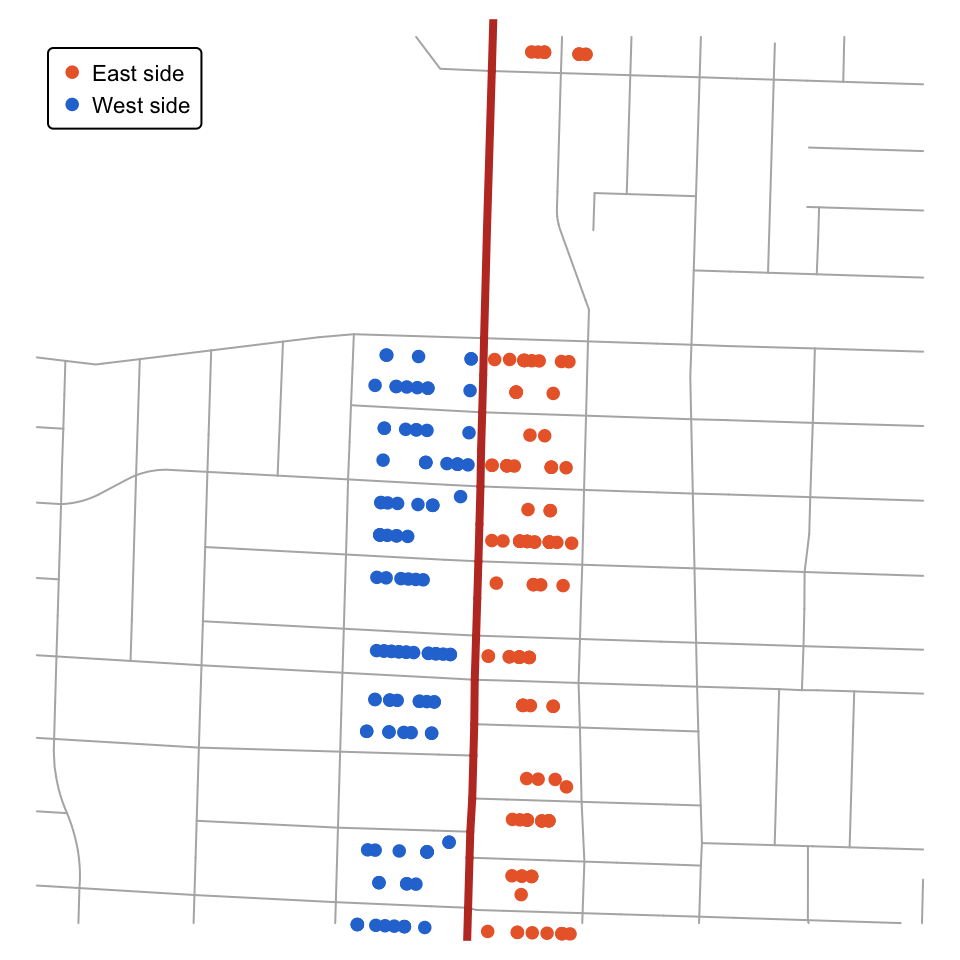
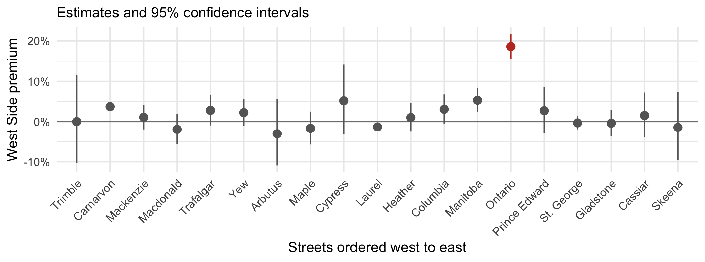

Pricing neighbourhood prestige at Vancouver’s Ontario Street
COMM 407 example presentation
Thesis
Code
suppressPackageStartupMessages({library(tidyverse)library(sf)library(fixest)library(modelsummary)library(tmap)library(VancouvR)library(cancensus)})tmap_mode("plot")# City of Vancouver street segments, labelled by hundred block. Some labels# cover a range of blocks, such as "4600-4800 ONTARIO ST".streets <-get_cov_data("public-streets") |>st_transform(26910)street_line <-function(name) { streets |>filter(str_detect(hblock, paste0("^[0-9-]+ ", name, "$"))) |>st_union()}# Distance to a north-south street, negative on its west sidesigned_distance <-function(points, line) { link <-st_nearest_points(points, line) on_line <-st_coordinates(st_cast(link, "POINT")[c(FALSE, TRUE)]) dist <-as.numeric(st_length(link))if_else(st_coordinates(points)[, 1] < on_line[, 1], -dist, dist)}ontario <-street_line("ONTARIO ST")ontario_box <-st_bbox(ontario)# 2021 Census tracts for comparisons within small geographic areastracts <-get_census("CA21", regions =list(CSD ="5915022"), level ="CT",geo_format ="sf", quiet =TRUE) |>select(tract = GeoUID) |>st_transform(26910)# Single-family sales, 2001-2025, level with Ontario Street (north to south).# Require usable coordinates and positive sizes. Exclude lots under 1,000# sq ft, which are implausibly small for this single-family comparison.sales_sf <-read_rds("data/bca262.rds") |>filter(juris_label =="City of Vancouver", act_use_cat =="S/F Res",!is.na(lon), !is.na(lat), price >100000,between(year(sale_date), 2001, 2025), lotsize >=1000, floorarea >0) |>st_as_sf(coords =c("lon", "lat"), crs =4326) |>st_transform(26910) |>mutate(x =st_coordinates(geometry)[, 1], y =st_coordinates(geometry)[, 2]) |>filter(between(y, ontario_box["ymin"], ontario_box["ymax"])) |>mutate(dist =signed_distance(geometry, ontario))n_sales <-nrow(sales_sf)sales_sf <- sales_sf |>st_join(tracts) |># Address formats change in the course file, so the side comes from the# map. East-west streets are the numbered avenues and King Edward,# written "41ST AVE W" in early years and "41ST" later.mutate(west = dist <0,ew_street =str_detect(str_name,"^(\\d+(ST|ND|RD|TH)|KING EDWARD)( AVE)?( [EW])?$"),year =year(sale_date), quarter =paste(year, quarter(sale_date)),age = year - year_built)stopifnot(nrow(sales_sf) == n_sales) # a sale on a boundary would appear twice# Make the estimation sample explicit before counting sales or drawing maps.sales_sf <-filter(sales_sf, !is.na(tract), !is.na(age), age >=0)sales <-st_drop_geometry(sales_sf)# Re-estimate from the course transactions. No estimates or figures are# imported from the paper. Hold lot size, floor area, age, tract and quarter# fixed; cluster standard errors by census tract.premium <-function(data) { m <-feols(log(price) ~ west +log(lotsize) +log(floorarea) + age | quarter + tract, data = data, cluster =~tract) ci <-confint(m, parm ="westTRUE", level =0.95) used <-obs(m) # fixest removes singleton fixed-effect groupstibble(b =coef(m)[["westTRUE"]], lo = ci[1, 1], hi = ci[1, 2],n =nobs(m), clusters =n_distinct(data$tract[used]), rows =list(used),model =list(m))}near_ontario <-filter(sales, abs(dist) <150, ew_street)main <-premium(near_ontario)stopifnot(n_distinct(near_ontario$west[main$rows[[1]]]) ==2)pct <-function(b) 100* (exp(b) -1)
Single-family homes just west of Ontario Street sell for about 19% more, after accounting for measured housing differences and sale timing.
Question: How much do buyers pay for neighbourhood prestige?
Why care? A price gap across a quiet street could reveal something that housing size and nearby amenities cannot explain.
The students behind the question
The paper grew out of an in-class presentation by four UBC Sauder undergraduates:
Andre Linaksita, Vivian Pan, Harrison Dann, and Emily Tan
The puzzle: expensive neighbourhoods have both prestige and desirable amenities. How can we separate their values?
The idea: compare nearby homes across the boundary between Vancouver’s East Side and West Side.
Ontario Street separates E and W addresses
Code
suppressPackageStartupMessages({library(tidyverse)library(sf)library(fixest)library(modelsummary)library(tmap)library(VancouvR)library(cancensus)})tmap_mode("plot")# City of Vancouver street segments, labelled by hundred block. Some labels# cover a range of blocks, such as "4600-4800 ONTARIO ST".streets <-get_cov_data("public-streets") |>st_transform(26910)street_line <-function(name) { streets |>filter(str_detect(hblock, paste0("^[0-9-]+ ", name, "$"))) |>st_union()}# Distance to a north-south street, negative on its west sidesigned_distance <-function(points, line) { link <-st_nearest_points(points, line) on_line <-st_coordinates(st_cast(link, "POINT")[c(FALSE, TRUE)]) dist <-as.numeric(st_length(link))if_else(st_coordinates(points)[, 1] < on_line[, 1], -dist, dist)}ontario <-street_line("ONTARIO ST")ontario_box <-st_bbox(ontario)# 2021 Census tracts for comparisons within small geographic areastracts <-get_census("CA21", regions =list(CSD ="5915022"), level ="CT",geo_format ="sf", quiet =TRUE) |>select(tract = GeoUID) |>st_transform(26910)# Single-family sales, 2001-2025, level with Ontario Street (north to south).# Require usable coordinates and positive sizes. Exclude lots under 1,000# sq ft, which are implausibly small for this single-family comparison.sales_sf <-read_rds("data/bca262.rds") |>filter(juris_label =="City of Vancouver", act_use_cat =="S/F Res",!is.na(lon), !is.na(lat), price >100000,between(year(sale_date), 2001, 2025), lotsize >=1000, floorarea >0) |>st_as_sf(coords =c("lon", "lat"), crs =4326) |>st_transform(26910) |>mutate(x =st_coordinates(geometry)[, 1], y =st_coordinates(geometry)[, 2]) |>filter(between(y, ontario_box["ymin"], ontario_box["ymax"])) |>mutate(dist =signed_distance(geometry, ontario))n_sales <-nrow(sales_sf)sales_sf <- sales_sf |>st_join(tracts) |># Address formats change in the course file, so the side comes from the# map. East-west streets are the numbered avenues and King Edward,# written "41ST AVE W" in early years and "41ST" later.mutate(west = dist <0,ew_street =str_detect(str_name,"^(\\d+(ST|ND|RD|TH)|KING EDWARD)( AVE)?( [EW])?$"),year =year(sale_date), quarter =paste(year, quarter(sale_date)),age = year - year_built)stopifnot(nrow(sales_sf) == n_sales) # a sale on a boundary would appear twice# Make the estimation sample explicit before counting sales or drawing maps.sales_sf <-filter(sales_sf, !is.na(tract), !is.na(age), age >=0)sales <-st_drop_geometry(sales_sf)# Re-estimate from the course transactions. No estimates or figures are# imported from the paper. Hold lot size, floor area, age, tract and quarter# fixed; cluster standard errors by census tract.premium <-function(data) { m <-feols(log(price) ~ west +log(lotsize) +log(floorarea) + age | quarter + tract, data = data, cluster =~tract) ci <-confint(m, parm ="westTRUE", level =0.95) used <-obs(m) # fixest removes singleton fixed-effect groupstibble(b =coef(m)[["westTRUE"]], lo = ci[1, 1], hi = ci[1, 2],n =nobs(m), clusters =n_distinct(data$tract[used]), rows =list(used),model =list(m))}near_ontario <-filter(sales, abs(dist) <150, ew_street)main <-premium(near_ontario)stopifnot(n_distinct(near_ontario$west[main$rows[[1]]]) ==2)pct <-function(b) 100* (exp(b) -1)# Draw the map from street geometry and the actual estimation sample.band <- sales_sf |>filter(abs(dist) <150, ew_street) |>slice(main$rows[[1]]) |>mutate(side =if_else(west, "West side", "East side"))stopifnot(nrow(band) == main$n)centre <-st_coordinates(st_centroid(st_union(band)))window <-st_bbox(c(xmin = centre[1] -600, xmax = centre[1] +600,ymin = centre[2] -600, ymax = centre[2] +600),crs =st_crs(26910))tm_shape(st_crop(streets, window), bbox = window) +tm_lines(col ="grey70") +tm_shape(st_sf(geometry = ontario)) +tm_lines(col ="#c0392b", lwd =4) +tm_shape(band) +tm_dots(fill ="side", size =0.4,fill.scale =tm_scale_categorical(values =c("East side"="#eb6834","West side"="#2a78d6")),fill.legend =tm_legend(title ="", position =tm_pos_in("left", "top"),bg.color ="white")) +tm_layout(frame =FALSE)

Ontario Street (red) is a quiet residential street.
Crossing it changes E to W in addresses on east–west streets.
Compare single-family sales within 150 m on either side.
The map shows one stretch. The analysis uses 1,024 sales in 2001–2025 along the street.
A local West Side price premium
Code
suppressPackageStartupMessages({library(tidyverse)library(sf)library(fixest)library(modelsummary)library(tmap)library(VancouvR)library(cancensus)})tmap_mode("plot")# City of Vancouver street segments, labelled by hundred block. Some labels# cover a range of blocks, such as "4600-4800 ONTARIO ST".streets <-get_cov_data("public-streets") |>st_transform(26910)street_line <-function(name) { streets |>filter(str_detect(hblock, paste0("^[0-9-]+ ", name, "$"))) |>st_union()}# Distance to a north-south street, negative on its west sidesigned_distance <-function(points, line) { link <-st_nearest_points(points, line) on_line <-st_coordinates(st_cast(link, "POINT")[c(FALSE, TRUE)]) dist <-as.numeric(st_length(link))if_else(st_coordinates(points)[, 1] < on_line[, 1], -dist, dist)}ontario <-street_line("ONTARIO ST")ontario_box <-st_bbox(ontario)# 2021 Census tracts for comparisons within small geographic areastracts <-get_census("CA21", regions =list(CSD ="5915022"), level ="CT",geo_format ="sf", quiet =TRUE) |>select(tract = GeoUID) |>st_transform(26910)# Single-family sales, 2001-2025, level with Ontario Street (north to south).# Require usable coordinates and positive sizes. Exclude lots under 1,000# sq ft, which are implausibly small for this single-family comparison.sales_sf <-read_rds("data/bca262.rds") |>filter(juris_label =="City of Vancouver", act_use_cat =="S/F Res",!is.na(lon), !is.na(lat), price >100000,between(year(sale_date), 2001, 2025), lotsize >=1000, floorarea >0) |>st_as_sf(coords =c("lon", "lat"), crs =4326) |>st_transform(26910) |>mutate(x =st_coordinates(geometry)[, 1], y =st_coordinates(geometry)[, 2]) |>filter(between(y, ontario_box["ymin"], ontario_box["ymax"])) |>mutate(dist =signed_distance(geometry, ontario))n_sales <-nrow(sales_sf)sales_sf <- sales_sf |>st_join(tracts) |># Address formats change in the course file, so the side comes from the# map. East-west streets are the numbered avenues and King Edward,# written "41ST AVE W" in early years and "41ST" later.mutate(west = dist <0,ew_street =str_detect(str_name,"^(\\d+(ST|ND|RD|TH)|KING EDWARD)( AVE)?( [EW])?$"),year =year(sale_date), quarter =paste(year, quarter(sale_date)),age = year - year_built)stopifnot(nrow(sales_sf) == n_sales) # a sale on a boundary would appear twice# Make the estimation sample explicit before counting sales or drawing maps.sales_sf <-filter(sales_sf, !is.na(tract), !is.na(age), age >=0)sales <-st_drop_geometry(sales_sf)# Re-estimate from the course transactions. No estimates or figures are# imported from the paper. Hold lot size, floor area, age, tract and quarter# fixed; cluster standard errors by census tract.premium <-function(data) { m <-feols(log(price) ~ west +log(lotsize) +log(floorarea) + age | quarter + tract, data = data, cluster =~tract) ci <-confint(m, parm ="westTRUE", level =0.95) used <-obs(m) # fixest removes singleton fixed-effect groupstibble(b =coef(m)[["westTRUE"]], lo = ci[1, 1], hi = ci[1, 2],n =nobs(m), clusters =n_distinct(data$tract[used]), rows =list(used),model =list(m))}near_ontario <-filter(sales, abs(dist) <150, ew_street)main <-premium(near_ontario)stopifnot(n_distinct(near_ontario$west[main$rows[[1]]]) ==2)pct <-function(b) 100* (exp(b) -1)# Report the fitted model used for the headline estimate and the map.modelsummary(list("Log sale price"= main$model[[1]]),coef_map =c("westTRUE"="West side", "log(lotsize)"="Log lot size","log(floorarea)"="Log floor area", "age"="Age (years)"),estimate ="{estimate} ({std.error})", statistic =NULL,fmt =4, stars =FALSE,gof_map =data.frame(raw =c("nobs", "r.squared"),clean =c("Sales", "R-squared"), fmt =c(0, 3)),add_rows =data.frame(term =c("Census tract FE", "Sale quarter FE"),"Log sale price"=c("Yes", "Yes"), check.names =FALSE),output ="kableExtra") |> kableExtra::row_spec(1, bold =TRUE)
Log sale price
West side
0.1705 (0.0111)
Log lot size
0.3189 (0.0265)
Log floor area
0.1883 (0.0492)
Age (years)
−0.0020 (0.0003)
Sales
1024
R-squared
0.946
Census tract FE
Yes
Sale quarter FE
Yes
Standard errors in parentheses, clustered by census tract (8 clusters). FE = fixed effects.
West-side premium: 18.6%
Convert the log coefficient:
100 * (exp(b) - 1)
95% interval: 15.5% to 21.7%.
Sample: single-family sales within 150 m of Ontario Street, 2001–2025.
Other streets show smaller price gaps
Code
suppressPackageStartupMessages({library(tidyverse)library(sf)library(fixest)library(modelsummary)library(tmap)library(VancouvR)library(cancensus)})tmap_mode("plot")# City of Vancouver street segments, labelled by hundred block. Some labels# cover a range of blocks, such as "4600-4800 ONTARIO ST".streets <-get_cov_data("public-streets") |>st_transform(26910)street_line <-function(name) { streets |>filter(str_detect(hblock, paste0("^[0-9-]+ ", name, "$"))) |>st_union()}# Distance to a north-south street, negative on its west sidesigned_distance <-function(points, line) { link <-st_nearest_points(points, line) on_line <-st_coordinates(st_cast(link, "POINT")[c(FALSE, TRUE)]) dist <-as.numeric(st_length(link))if_else(st_coordinates(points)[, 1] < on_line[, 1], -dist, dist)}ontario <-street_line("ONTARIO ST")ontario_box <-st_bbox(ontario)# 2021 Census tracts for comparisons within small geographic areastracts <-get_census("CA21", regions =list(CSD ="5915022"), level ="CT",geo_format ="sf", quiet =TRUE) |>select(tract = GeoUID) |>st_transform(26910)# Single-family sales, 2001-2025, level with Ontario Street (north to south).# Require usable coordinates and positive sizes. Exclude lots under 1,000# sq ft, which are implausibly small for this single-family comparison.sales_sf <-read_rds("data/bca262.rds") |>filter(juris_label =="City of Vancouver", act_use_cat =="S/F Res",!is.na(lon), !is.na(lat), price >100000,between(year(sale_date), 2001, 2025), lotsize >=1000, floorarea >0) |>st_as_sf(coords =c("lon", "lat"), crs =4326) |>st_transform(26910) |>mutate(x =st_coordinates(geometry)[, 1], y =st_coordinates(geometry)[, 2]) |>filter(between(y, ontario_box["ymin"], ontario_box["ymax"])) |>mutate(dist =signed_distance(geometry, ontario))n_sales <-nrow(sales_sf)sales_sf <- sales_sf |>st_join(tracts) |># Address formats change in the course file, so the side comes from the# map. East-west streets are the numbered avenues and King Edward,# written "41ST AVE W" in early years and "41ST" later.mutate(west = dist <0,ew_street =str_detect(str_name,"^(\\d+(ST|ND|RD|TH)|KING EDWARD)( AVE)?( [EW])?$"),year =year(sale_date), quarter =paste(year, quarter(sale_date)),age = year - year_built)stopifnot(nrow(sales_sf) == n_sales) # a sale on a boundary would appear twice# Make the estimation sample explicit before counting sales or drawing maps.sales_sf <-filter(sales_sf, !is.na(tract), !is.na(age), age >=0)sales <-st_drop_geometry(sales_sf)# Re-estimate from the course transactions. No estimates or figures are# imported from the paper. Hold lot size, floor area, age, tract and quarter# fixed; cluster standard errors by census tract.premium <-function(data) { m <-feols(log(price) ~ west +log(lotsize) +log(floorarea) + age | quarter + tract, data = data, cluster =~tract) ci <-confint(m, parm ="westTRUE", level =0.95) used <-obs(m) # fixest removes singleton fixed-effect groupstibble(b =coef(m)[["westTRUE"]], lo = ci[1, 1], hi = ci[1, 2],n =nobs(m), clusters =n_distinct(data$tract[used]), rows =list(used),model =list(m))}near_ontario <-filter(sales, abs(dist) <150, ew_street)main <-premium(near_ontario)stopifnot(n_distinct(near_ontario$west[main$rows[[1]]]) ==2)pct <-function(b) 100* (exp(b) -1)# Borrow the paper's list of comparison streets, then estimate every result# from the course transactions. Exclude Ontario's band from these samples.placebo_streets <-c("TRIMBLE ST", "CARNARVON ST", "MACKENZIE ST", "MACDONALD ST","TRAFALGAR ST", "YEW ST", "ARBUTUS ST", "MAPLE ST", "CYPRESS ST","PINE ST", "ALDER ST", "SPRUCE ST", "LAUREL ST", "HEATHER ST","COLUMBIA ST", "MANITOBA ST", "PRINCE EDWARD ST","ST. GEORGE ST", "GLADSTONE ST", "CASSIAR ST", "SKEENA ST")# Use the length-weighted centre of each street only to determine west-east# ordering. An ordered factor gives the streets equal spacing on the chart.street_x <-function(line) unname(st_coordinates(st_centroid(line))[1, "X"])ontario_x <-street_x(ontario)placebo <-function(name) { line <-street_line(name) box <-st_bbox(line) data <- sales_sf |>filter(ew_street, abs(dist) >=150,between(x, box["xmin"] -200, box["xmax"] +200),between(y, box["ymin"], box["ymax"])) |>mutate(dist =signed_distance(geometry, line), west = dist <0) |>st_drop_geometry() |>filter(abs(dist) <150)if (nrow(data) <100) return(NULL)premium(data) |>mutate(easting =street_x(line))}placebo_results <-map(set_names(placebo_streets), placebo) |>compact() |>bind_rows(.id ="street") |>bind_rows(mutate(main, street ="ONTARIO ST", easting = ontario_x)) |>mutate(street =str_to_title(str_remove(street, " ST$"))) |>arrange(easting) |>mutate(street =ordered(street, levels = street))placebo_results |>ggplot(aes(street, pct(b), colour = street =="Ontario")) +geom_hline(yintercept =0, colour ="grey50") +geom_pointrange(aes(ymin =pct(lo), ymax =pct(hi))) +scale_colour_manual(values =c(`TRUE`="#c0392b", `FALSE`="grey40"),guide ="none") +scale_y_continuous(labels = \(x) paste0(x, "%")) +labs(x ="Streets ordered west to east", y ="West Side premium",subtitle ="Estimates and 95% confidence intervals") +theme_minimal(base_size =16) +theme(axis.text.x =element_text(angle =45, hjust =1))

Ontario’s estimated gap is the largest among these 19 streets.
What would make this a prestige effect?
The interpretation requires other features that buyers value to vary smoothly across Ontario Street.
Remaining concern: unmeasured renovation quality, school access or other amenities could differ across the boundary.
Precision: the main sample covers only 8 census tracts. Clustered intervals are still approximate with so few clusters.
Scope: the result concerns nearby single-family homes. It does not establish the premium elsewhere or for condos.
Takeaway
A substantial price premium appears at the E/W address boundary, consistent with buyers valuing neighbourhood prestige.
The local comparison identifies the gap. The other-street comparison shows why Ontario Street deserves attention.
The unresolved question is how much of that gap reflects prestige rather than unmeasured housing or neighbourhood differences.
Backup: Sources
Question and research design: Daryl Larsen, Sanghoon Lee, and Seung Hoon Lee (2026), The Value of W: Pricing Neighbourhood Prestige, May 18 working paper, SSRN 6787843. Page 1 credits the four students.
Sales: BC Assessment, course file data/bca262.rds. This analysis uses 2001–2025 single-family transactions.
Geography: City of Vancouver public-streets and Statistics Canada 2021 census tracts via cancensus.
All estimates, charts and the map are generated by this document’s R code from the data. The question and comparison build on the credited work.
Backup: Decision log
Focus: keep the local premium and one comparison-street test. Remove the citywide gap, income controls and broad robustness catalogue.
Address coding: use geometry for E/W and allow both street-name formats in the course file.
Usable records: require positive sizes, usable age and a census tract. Check that the spatial join does not duplicate sales.
Comparison streets: exclude Ontario’s 150 m band and require at least 100 usable sales per street.
Interpretation: describe a local premium and state the assumptions needed to attribute it to prestige.
Backup: AI use
Tool: OpenAI Codex helped revise the teaching slides and R code using the supplied paper and course files.
Checks: reran the analysis, checked sample counts and spatial joins, and inspected the rendered slides against the computed results.
Responsibility: presenters must explain the code, credit the original idea and defend the interpretation.